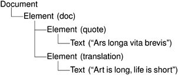
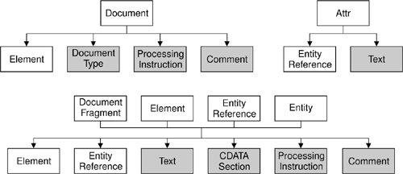

Reading XML with DOMDOM is a standard API for parsing XML developed by the World Wide Web Consortium (W3C). Qt provides a non-validating DOM Level 2 implementation for reading, manipulating, and writing XML documents. DOM represents an XML file as a tree in memory. We can navigate through the DOM tree as much as we want, and we can modify the tree and save it back to disk as an XML file. Let's consider the following XML document:
<doc>
<quote>Ars longa vita brevis</quote>
<translation>Art is long, life is short</translation>
</doc>
It corresponds to the following DOM tree:  The DOM tree contains nodes of different types. For example, an Element node corresponds to an opening tag and its matching closing tag. The material that falls between the tags appears as child nodes of the Element node. In Qt, the node types (like all other DOM-related classes) have a QDom prefix. Thus, QDomElement represents an Element node, and QDomText represents a Text node. Different types of nodes can have different kinds of child nodes. For example, an Element node can contain other Element nodes, and also EntityReference, Text, CDATASection, ProcessingInstruction, and Comment nodes. Figure 15.3 shows which nodes can have which kinds of child nodes. The nodes shown in gray cannot have any child nodes of their own. Figure 15.3. Parentchild relationships between DOM nodesTo illustrate how to use DOM for reading XML files, we will write a parser for the book index file format described in the previous section (p. 340).
class DomParser
{
public:
DomParser(QIODevice *device, QTreeWidget *tree);
private:
void parseEntry(const QDomElement &element,
QTreeWidgetItem *parent);
QTreeWidget *treeWidget;
};
We define a class called DomParser that will parse a book index XML document and display the result in a QTReeWidget. This class does not inherit from any other class.
DomParser::DomParser(QIODevice *device, QTreeWidget *tree)
{
treeWidget = tree;
QString errorStr;
int errorLine;
int errorColumn;
QDomDocument doc;
if (!doc.setContent(device, true, &errorStr, &errorLine,
&errorColumn)) {
QMessageBox::warning(0, QObject::tr("DOM Parser"),
QObject::tr("Parse error at line %1, "
"column %2:\n%3")
.arg(errorLine)
.arg(errorColumn)
.arg(errorStr));
return;
}
QDomElement root = doc.documentElement();
if (root.tagName() != "bookindex")
return;
QDomNode node = root.firstChild();
while (!node.isNull()) {
if (node.toElement().tagName() == "entry")
parseEntry(node.toElement(), 0);
node = node.nextSibling();
}
}
In the constructor, we create a QDomDocument object and call setContent() on it to have it read the XML document provided by the QIODevice. The setContent() function automatically opens the device if it isn't already open. Then we call documentElement() on the QDomDocument to obtain its single QDomElement child, and we check that it is a <bookindex> element. We iterate over all the child nodes, and if the node is an <entry> element, we call parseEntry() to parse it. The QDomNode class can store any type of node. If we want to process a node further, we must first convert it to the right data type. In this example, we only care about Element nodes, so we call toElement() on the QDomNode to convert it to a QDomElement and then call tagName() to retrieve the element's tag name. If the node is not of type Element, the toElement() function returns a null QDomElement object, with an empty tag name.
void DomParser::parseEntry(const QDomElement &element,
QTreeWidgetItem *parent)
{
QTreeWidgetItem *item;
if (parent) {
item = new QTreeWidgetItem(parent);
} else {
item = new QTreeWidgetItem(treeWidget);
}
item->setText(0, element.attribute("term"));
QDomNode node = element.firstChild();
while (!node.isNull()) {
if (node.toElement().tagName() == "entry") {
parseEntry(node.toElement(), item);
} else if (node.toElement().tagName() == "page") {
QDomNode childNode = node.firstChild();
while (!childNode.isNull()) {
if (childNode.nodeType() == QDomNode::TextNode) {
QString page = childNode.toText().data();
QString allPages = item->text(1);
if (!allPages.isEmpty())
allPages += ", ";
allPages += page;
item->setText(1, allPages);
break;
}
childNode = childNode.nextSibling();
}
}
node = node.nextSibling();
}
}
In parseEntry(), we create a QTReeWidget item. If the tag is nested within another <entry> tag, the new tag defines a subentry in the index, and we create the QTReeWidgetItem as a child of the QtreeWidgetItem that represents the encompassing entry. Otherwise, we create the QtreeWidgetItem with treeWidget as its parent, making it a top-level item. We call setText() to set the text shown in column 0 to the value of the <entry> tag's term attribute. Once we have initialized the QtreeWidgetItem, we iterate over the child nodes of the QDomElement node corresponding to the current <entry> tag. If the element is <entry>, we call parseEntry() with the current item as the second argument. The new entry's QTReeWidgetItem will then be created with the encompassing entry's QTReeWidgetItem as its parent. If the element is <page>, we navigate through the element's child list to find a Text node. Once we have found it, we call toText() to convert it to a QDomText object and data() to extract the text as a QString. Then we add the text to the comma-separated list of page numbers in column 1 of the QtreeWidgetItem. Let's now see how we can use the DomParser class to parse a file:
void parseFile(const QString &fileName)
{
QStringList labels;
labels << QObject::tr("Terms") << QObject::tr("Pages");
QTreeWidget *treeWidget = new QTreeWidget;
treeWidget->setHeaderLabels(labels);
treeWidget->setWindowTitle(QObject::tr("DOM Parser"));
treeWidget->show();
QFile file(fileName);
DomParser(&file, treeWidget);
}
We start by setting up a QtreeWidget. Then we create a QFile and a DomParser. When the DomParser is constructed, it parses the file and populates the tree widget. Like the previous example, we need the following line in the application's .pro file to link against the QtXml library: QT += xml As the example illustrates, navigating through a DOM tree can be cumbersome. Simply extracting the text between <page> and </page> required us to iterate through a list of QDomNodes using firstChild() and nextSibling(). Programmers who use DOM a lot often write their own higher-level wrapper functions to simplify commonly needed operations, such as extracting the text between opening and closing tags. |